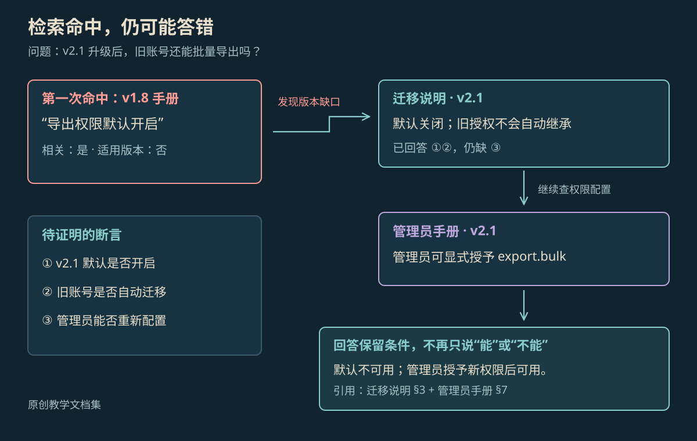

AGENTIC RETRIEVAL
Agentic RAG：检索命中了，为什么还会答错
用一次软件升级问答，跟踪旧手册命中、版本冲突、缺口补查与条件化回答；区分通用检索循环和 Self-RAG、CRAG。
本页目录
相似文档给出了错误的“可以”#
教学知识库有三份资料：v1.8 用户手册写“批量导出默认开启”；v2.1 迁移说明写“批量导出默认关闭，旧授权不自动继承”；v2.1 管理员手册允许显式授予 export.bulk。用户问：“升级到 2.1 后，旧账号还能直接导出吗？”
一次固定检索若只返回旧手册，生成器会很容易写出带引用的错误答案。引用存在与证据适用之间，隔着版本、对象和条件三个检查。Agentic RAG 把这些缺口变成下一步检索动作，让一次命中有机会被修正。

放大查看 ↗检索策略要围绕尚未证明的断言#
先把问题拆成需要资料支持的断言，再跟踪各自的覆盖情况。旧手册可以解释历史行为，却不能证明 2.1 的默认设置。迁移说明解决了默认与继承问题，管理员手册补齐“是否能重新开启”。最后的回答因此包含两个条件：默认不可直接使用，获得新授权后可以。
{
"question_version": "2.1",
"claims": [
{"id":"default","status":"supported","source":"migration-2.1#3"},
{"id":"inherit","status":"supported","source":"migration-2.1#3"},
{"id":"configure","status":"missing","next_query":"2.1 export.bulk"}
],
"discarded": [{"source":"manual-1.8#8","reason":"version_mismatch"}]
}原始 RAG 研究把参数化生成器与外部非参数知识结合。实际应用中的文档切分、混合检索与重排可以有很多实现；这里讨论的是检索决策如何进入运行循环，不要求复刻那篇论文的训练结构。[1]
什么时候查下一次，什么时候停#
循环至少需要知道当前缺口、可用来源、剩余预算与停止条件。找不到 2.1 管理员说明时，可以扩大到官方发布说明；重复查询三次仍只得到 1.8 手册，就应记录资料缺口，避免用更多相似结果制造确定感。
# 教学伪代码：以证据覆盖驱动下一次读取
coverage = {"default": None, "inherit": None, "configure": None}
for step in range(search_limit):
query = query_for_missing_claim(coverage)
passages = retrieve(query, product="Export", version="2.1")
coverage = inspect_sources_and_conditions(passages, coverage)
if all_claims_supported(coverage):
return compose_conditional_answer(coverage)
return answer_known_parts_and_list_gaps(coverage)覆盖检查本身也可能误判。程序能核对版本字段和引用编号；判断一段话是否真的支持结论，往往还需要语义判据或人工复核。覆盖状态必须携带来源，后续检查才能推翻一个错误的“已支持”。
Self-RAG 与 CRAG 改的是不同位置#
Self-RAG 训练模型使用专门标记，控制检索，并评价材料相关性、生成片段的支持度等。它改变了模型训练与推理中的控制信号。一个普通工具循环如果只在提示里加“检查一下”，不能据此声称实现了 Self-RAG。[2]
CRAG 在检索后增加质量评估，根据评估结果采取不同的知识获取动作，并在需要时扩展网页搜索。它提供的是检索出错后的修正机制。两篇工作都关心检索质量，但模块、训练要求和判断信号不同。[3]
对上面的升级问答，可以先用版本元数据过滤，再对缺口做额外检索。这已经能检验一个明确的工程假设：允许补查，是否减少了“引用了旧手册”的错误。采用哪篇研究机制，应在这个基线上比较。
多一次检索也有代价#
若资料本就齐全，动态选择工具只会增加延迟。若检索库缺少新版文档，改写查询也无法生成证据。若网页搜索带回非官方转载，来源越多还可能让冲突更难判断。检索次数、来源集合与可使用的数据范围都要有界。
缓存也会改变结果：命中了上周缓存的 1.8 回答，可能让整个补查循环没有启动。缓存键需要包含产品、版本与访问范围；更新文档后，要能使相关答案和片段缓存失效。
评测“查全了”与“答对了”#
把三份教学文档做成一个固定小库，再分别隐藏迁移说明、修改版本字段、加入内容相似的非官方页面。逐次保存查询、选中片段、被排除原因和最终引用。对照固定检索与有界补查，分别检查关键断言覆盖、版本适用性、最终答案和成本。
一个答案可能把所有文档都读过，却仍把“可配置开启”写成“默认开启”。这类失败发生在证据组合阶段；继续扩大检索数量通常修不好它。
参考资料
论文、官方文档与案例依据。
- [1]Retrieval-Augmented Generation for Knowledge-Intensive NLP Tasks ↗
Lewis 等；NeurIPS 2020，参数与非参数知识结合的经典研究。
- [2]
- [3]Corrective Retrieval Augmented Generation ↗
Yan 等；检索质量评估与纠正性检索。